qgis2web WIKI
First steps
Installation
- In QGIS, select
Plugins > Manage and Install Plugins... - Find
qgis2web
Click
Install pluginor:
- Download and unzip to your QGIS plugins directory
Usage
Prepare your map as far as possible in QGIS, as you want it to appear in your webmap. Specific tasks you can carry out to improve your webmap include:
- Set your project title, and background and highlight colours in
Project > Properties... - Give your layers human-friendly names in the
Layers Panel - Give your layer columns human friendly names via
Layer > Properties > Attributes Form > Fields > Alias - Hide the columns you don't want to appear in your popups by changing their Widget Type to "Hidden"
- If any of your fields contain image's path, change their Widget Type to "Attachment" to have the images appear in popups
- Style your layers, and set their scale-dependent visibility, if required
Run qgis2web from the Web menu, or via its icon in Web toolbar
The panes lets you set options to export your map. All options are written to your QGIS project, so save your project if you want to keep these settings.
When you first start qgis2web, you will see a preview of your webmap in the plugin's dialog box.
* This preview does not update automatically when you change settings within the dialog. Click Update preview to see your changes.
When you switch output format, by changing selection between OpenLayers and Leaflet, the preview does automatically update.
* You can disable the initial automatic preview on the Settings tab
** The preview window will automatically be disabled if you have a layer with more than 1000 features
Project settings
Set QGIS project
In QGIS, open Project > Project Properties... > General. The following settings will affect your webmap:
Project titleSelection colorBackground color
Project title is set as the <title> of the exported webpage. In Leaflet maps, the title is also overlaid on the map:

Selection color is used as the highlight colour if Highlight on hover is checked:
Set Layers
Give your layers human-friendly names in Layer properties > Source
Single quotes ' and quotation marks " are supported but try not to use them
These will appear in your map's Layer list , grouped or not :
Set your layers' scale-dependent visibility, if required:
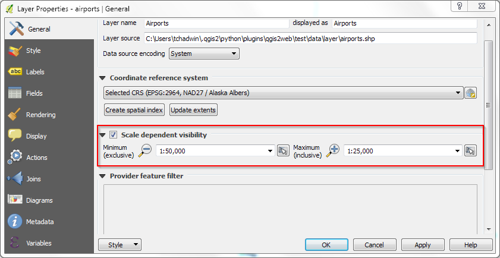Alias
Give your layer columns human friendly names via Layer > Properties > Attributes Form > Select Field > Alias:
Hidden Fields
Hide the field if you don't want to export it, by changing their Widget Type to "Hidden". As a result, the information will not appear in the popup:
Image Photo
If you want to show images in the popup you must set Widget Type to "Attachment" and do not change other values. Only the Absolute path is supported:
Set the absolute path as the field text:

The result in your map will look like this:
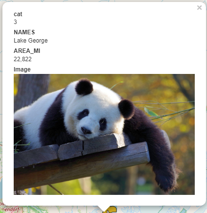Set Styles
No symbol
Data will not be drawn on the map. Useful if you want to show only labels.
Single symbol
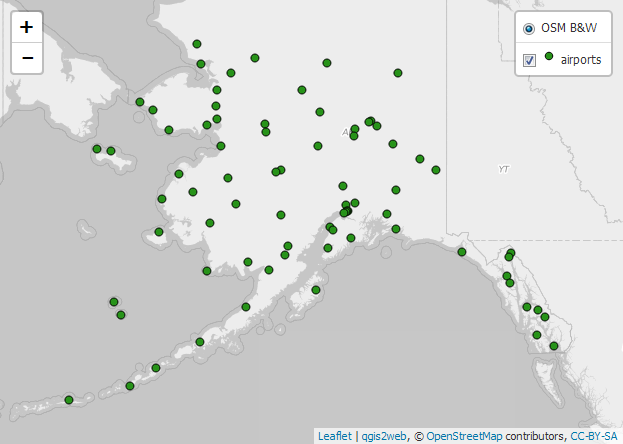Categorized
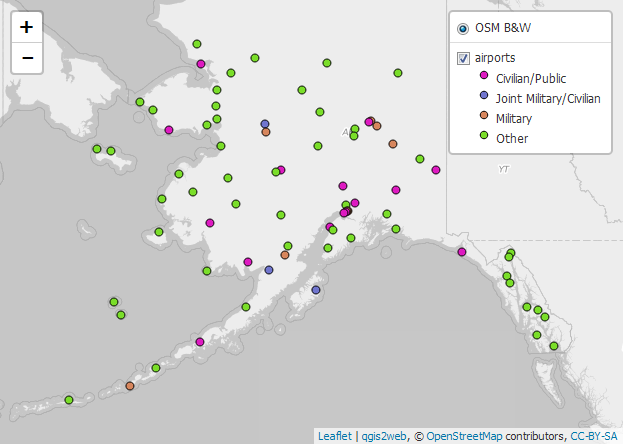Graduated
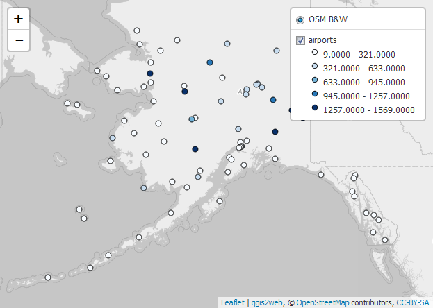2.5D
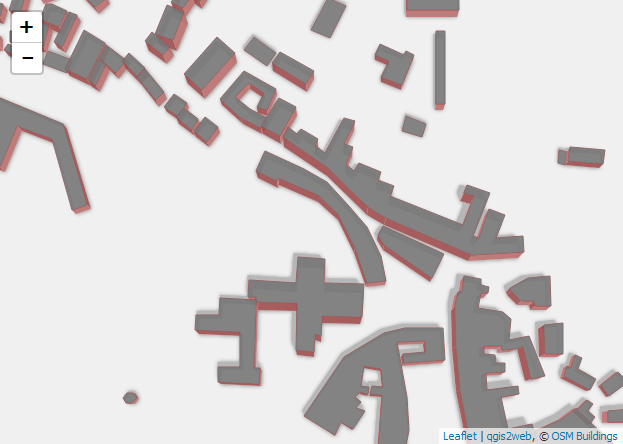More complex 2.5D styles are also possible, such as categorized:
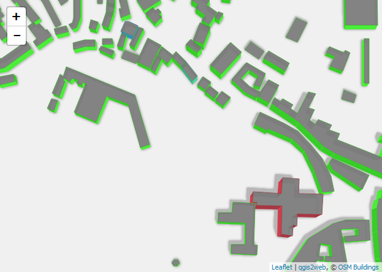Dash Line
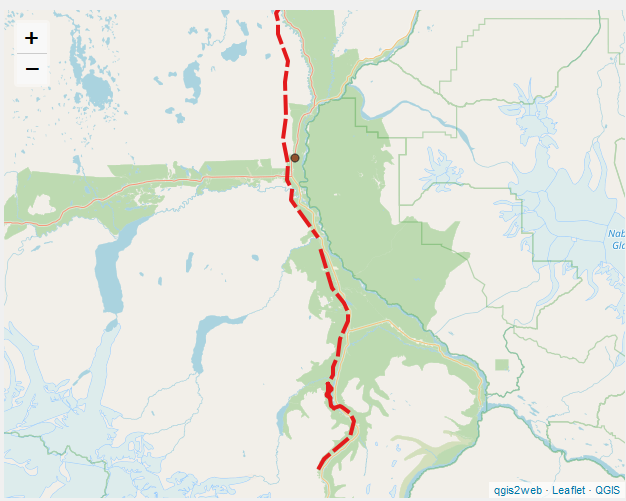Dot Line
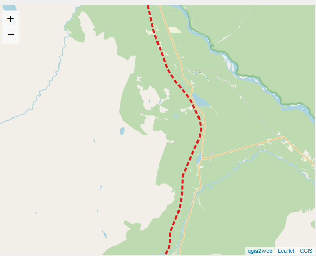Dash Dot Line
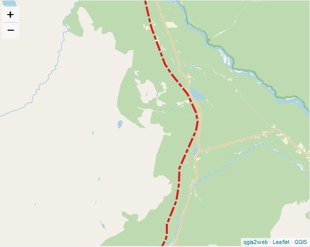Dash Dot Dot Line
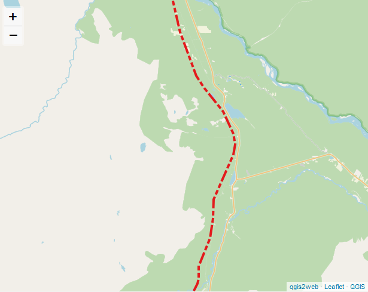SVG Marker

Transparency
Vector Layer
Change color's opacity, not layer's opacity
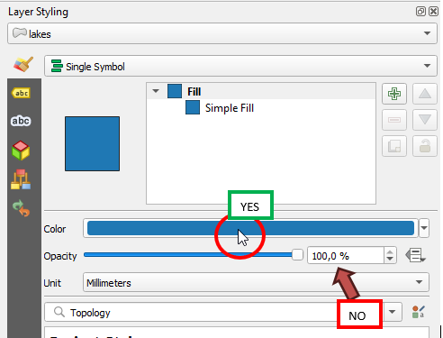 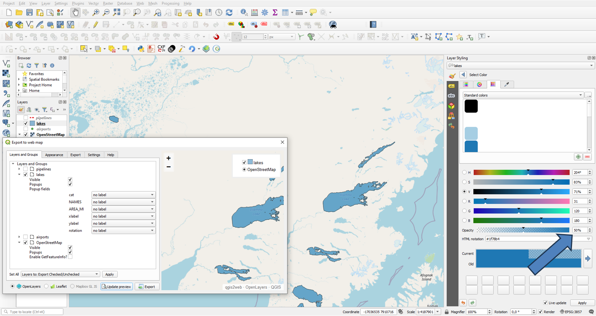Raster Layer
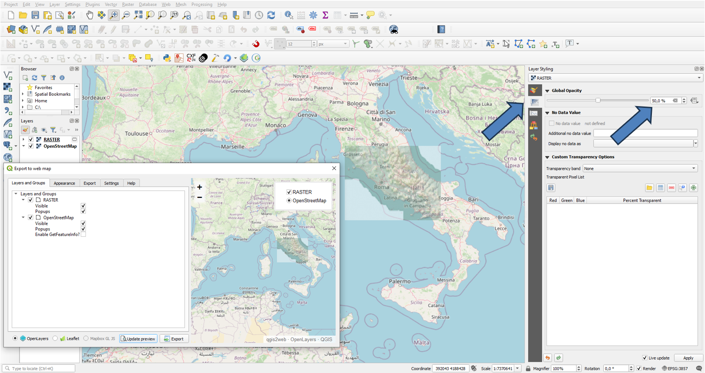WMS Layer
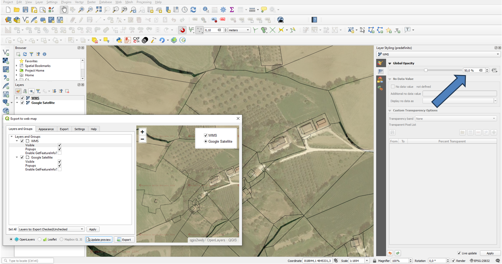Set Labels
Layers labelled in QGIS will be labelled in your webmap. The following formatting will be exported:
- font size
- font colour
- typeface
- bold
- italic
- backgrounds
- borders
- buffer
Note
- Buffers are only exported in OpenLayers
- Backgrounds and borders are only exported in Leaflet
- The export only specifies which font a label uses - it does not export the font itself
Set Basemaps
As of QGIS 3.0 and qgis2web 3.0 basemaps are now handled through the XYZ Tiles data source in QGIS.
Basemap Sources
Leaflet has a gallery of map providers HERE
This highlights the URL needed for XYZ Tiles:
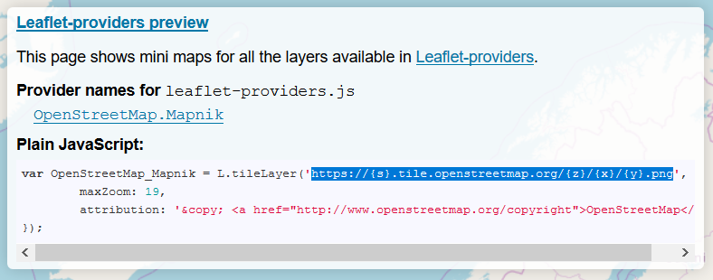You may need to modify the first character from something like:
https://{s}.tile.openstreetmap.org/{z}/{x}/{y}.png
to
https://a.tile.openstreetmap.org/{z}/{x}/{y}.png
If it requires an API key it will be something like this:
https://a.tile.openstreetmap.org/{z}/{x}/{y}.png?apikey=sdf987876sd8vs87s6f8blah
Adding a Basemap using XYZ Tiles
XYZ Tiles can be accessed from the browser and you can right click on it to add a new connection:
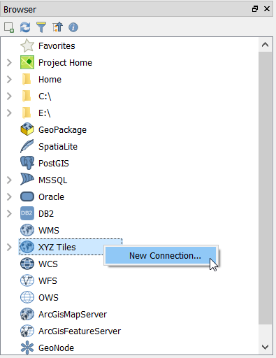Then put in a name for the basemap and the aforementioned URL
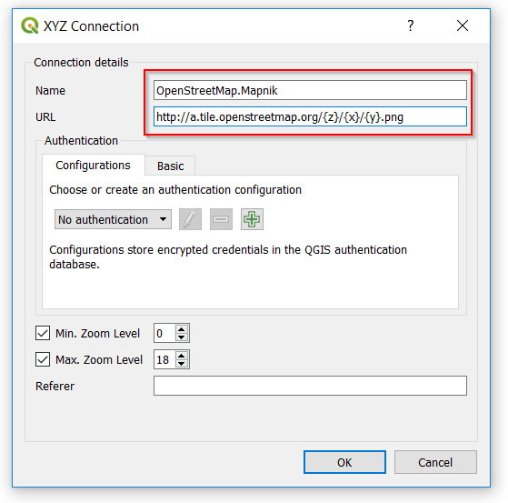You can then drag the newly added basemap from the Browser Menu into the Map. After adding a couple layers, it will look something like this in the preview:
Openlayers
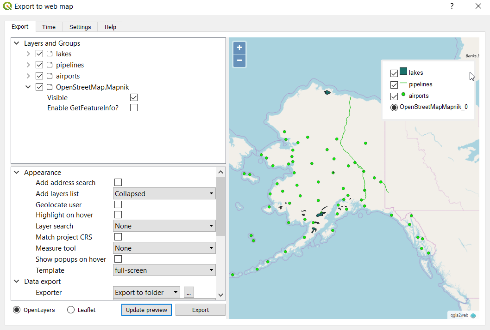Leaflet
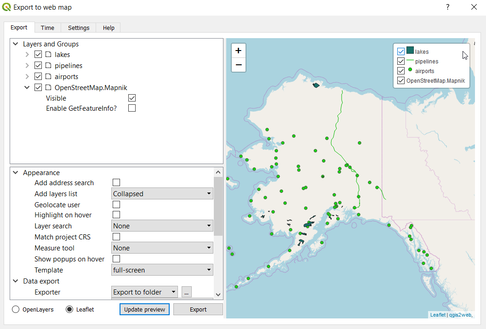Notes
- If you select multiple basemaps, you will only be able to switch between them if you also add a layers list to your map
- Basemaps are normally available on in EPSG:3857
- Openlayers doesn't seem to like layers with api keys, but they seem to work fine with leaflet
- Openlayers will create radio buttons for basemaps, Leaflet creates checkboxes as it treats basemaps the same as the other layers.
qgis2web settings
Layers and Groups
"Set all" input
The settings shown on this page can be set massively for all layers using the "Set all" input. The entries dedicated to the checks first insert them all, then remove them, then insert them etc...
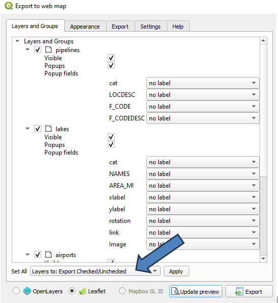Export Layers
When you launch qgis2web all activated layers in your qgis project will be checked as exportable. If you want to export all the layers of your project, turn them on before launching qgis2web or use the "Set all" input
Visible
Select whether the layer will be visible on map load. This only determines visibility - the layer will be loaded regardless of this setting:
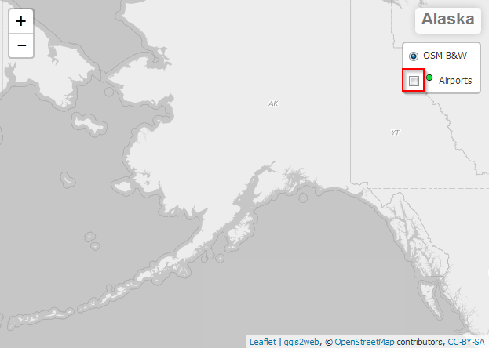Popups
Select whether a layer should show a popup and respond or whether the layer should not listen to click events.
OpenLayers popup will show all features information present in a click point, showing layer's name relating to queried feature
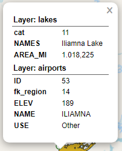Leaflet popup will only show information for one feature at a time
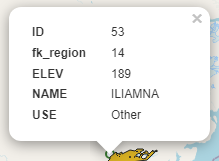Popup fields
Specify how each field will be labeled in pop-ups
| 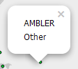 | 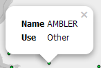 | 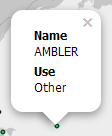 |
| no label | inline label | header label |
The options will have the following result in the popup:
no label(displays only data in the popup without showing the field name)inline label - always visible(displays field name on the same line as data)inline label - visible with data(displays field name on the same line as data, only if data is present)hidden(keeps information in the popup hidden at all times)header label - always visible(displays field name above data)header label - visible with data(displays field name above data, only if data is present)
Encode to JSON
If unchecked, WFS layers will remain remote WFS layers in the webmap. If checked, the layer will be written to a local GeoJSON file
Cluster
Cluster point features:
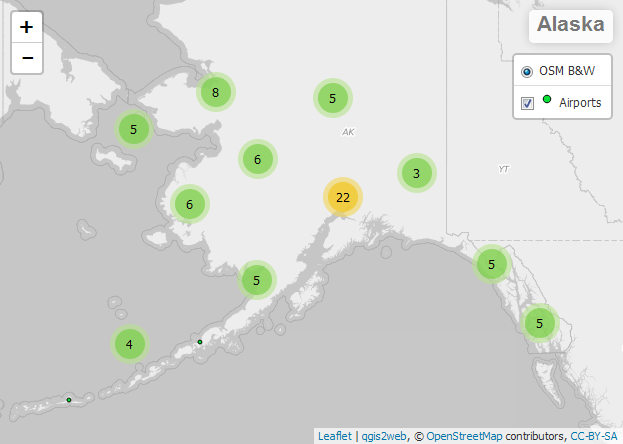GetFeatureInfo
If checked, the wms layers will be queryable with popup
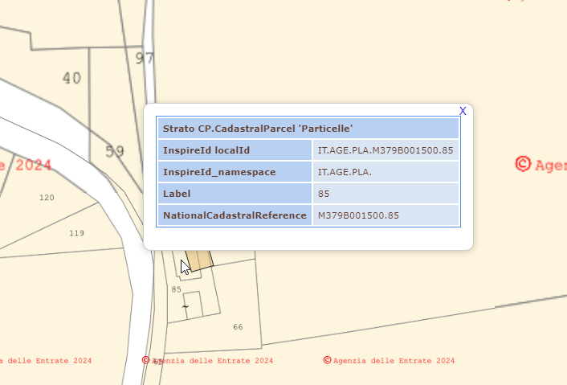Appearance
Add abstract
Add a collapsible info window in the webmap which shows the projects metadata abstract/ currently only leaflet-based webmaps
Add address search
Add field to allow searching for locations (geocode)
Add layers list
Include list of layers (with legend icons, where possible)
Geolocate user
Show user's location on map
Note: Chrome now blocks geolocation unless your map is hosted securely (HTTPS)
Highlight on hover
Highlight features on mouseover
Layer search
Add option to search for values in layer field values
Match project CRS
Create webmap in same projection as QGIS project, otherwise the webmap is projected in EPSG:3857
Add measure tool
Include interactive measuring widget - choose metric or imperial units
Show popups on hover
Show popups when mouse hovers over features
Template
Select HTML template for webmap - add your own templates to the /qgis2web/templates directory in your current QGIS3 profile folder
Extent
Either match the current QGIS view or show all contents of all layers (only local GeoJSON and rasters, not WFS/WMS)
Max zoom level
How far the webmap will zoom in
Min zoom level
How far the webmap will zoom out
Restrict to extent
Prevent panning or zooming beyond the selected extent
Export
Export folder
The folder where the webmap will be saved
Exporter
How your map will be exported - currently supported are `Export to folder` and `Export to FTP site`: Click the `...` button to configure the export settings
Mapping library location
Select whether to use a local copy of OL3/Leaflet, or whether to call the library from its CDN
Minify GeoJSON files
Remove unnecessary whitespace from exported GeoJSON to reduce file size
Precision
Simplify geometry to reduce file size. Note that 1 is the most aggressive simplification and 15 the least, for polygons a setting of 4 is probably about the right compromise between data size and quality
Limitation & Bug
Current limitations
QGIS, OpenLayers, and Leaflet are all different mapping technologies. This means that their respective functionality differs in many ways. qgis2web does its best to interpret a QGIS project and to export HTML, Javascript, and CSS to create a web map as close to the QGIS project as possible.
However, many elements of a QGIS project cannot be reproduced, and many are only possible in either OpenLayers or Leaflet. qgis2web tries its best to produce a publish-ready map, but you can always manually edit the output code to achieve what qgis2web cannot.
- in OL3 maps, only single rendered points cluster, not categorized or graduated
- line style (dashed/dotted) does not appear in OL3 preview, but works in export
- only a single 2.5d layer will render per map
- 2.5d layers only appear when zoomed in to building scales
- attribute filters and abstract export only works in leaflet based webmaps
Reporting bugs
Please report any problems you have with qgis2web. Without this feedback, I am often completely unaware that a problem exists. To ensure no time or effort is wasted in bug reporting, please follow these steps:
- Make sure you are using the latest release of qgis2web
- Check the issues on Github to see whether the bug has already been reported, and if so, read through all the comments on the issue, and add any additional information from your experience of the bug
- Make sure you can reproduce the bug reliably
- Reduce the complexity of your bug conditions as far as you can, especially by reducing the number of layers, ideally to one
- Raise a Github issue, including:
- only one bug per Github issue
- the qgis2web version (or make it clear you are using Github master branch)
- any Python error text/stack trace which occurs
- browser JS console errors - press F12 in qgis2web to open the developer toolbar and find the console
- screenshot of your settings
- screenshot of the output
- a link to the data you used, if possible
The stability of qgis2web relies on your bug reports, so please keep them coming.